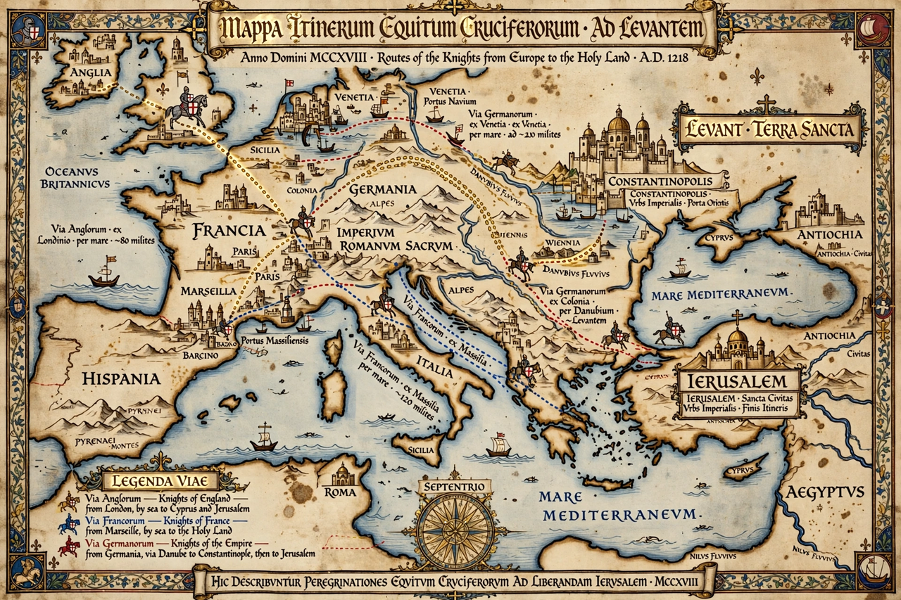

| Crusades | |
|---|---|
 | |
| Date | 1095–1291 (major expeditions to the Holy Land); crusading in other theatres continued into the 16th–17th centuries |
| Location | Levant and Anatolia; also Iberia, the Baltic, Egypt, and southern France |
| Result | Initial crusader states established in the Levant; eventual Muslim reconquest, completed with the fall of Acre (1291) |
| Key figures | Pope Urban II; Godfrey of Bouillon; Richard I of England; Saladin; Frederick II; Louis IX |
The Crusades were a series of religious wars initiated, supported, and sometimes directed by the Christian Church in the medieval period. The best known of these military expeditions are those to the Holy Land aimed at reclaiming Jerusalem and its surrounding territories from Muslim rule, between 1095 and 1291. Beginning with Pope Urban II's appeal at the Council of Clermont (1095) — answering a Byzantine request for aid against the Seljuk Turks — tens of thousands of western Europeans "took the cross", motivated by faith, the promise of indulgences, land, and adventure. Crusading was later extended to other fronts: the Iberian Reconquista, the Baltic (Northern Crusades), campaigns against heretics such as the Albigensians, and even against Christian political opponents of the papacy.
The crusades produced the military orders — the Knights Templar (founded c. 1119), the Knights Hospitaller, and the Teutonic Knights — warrior-monks who garrisoned castles such as Krak des Chevaliers and provided banking and logistics across Europe. The crusader states ("Outremer") were feudal societies in which a Latin Christian elite ruled Muslim, Jewish, and Eastern Christian majorities, with Italian maritime republics dominating trade. Contact between cultures transmitted technology, foods, learning, and artistic motifs, even amid violence that included massacres of Muslims, Jews (notably the Rhineland massacres of 1096), and Eastern Christians.
The Crusades entrenched religious antagonisms and remain a potent — and often mythologized — reference point in both Western and Middle Eastern political memory. Historians debate their long-term economic and cultural effects, from the growth of Mediterranean trade and taxation systems in Europe to their role in the development of chivalric literature and the concept of holy war. Later "crusades" were preached into the early modern era, including the campaigns associated with the Ottoman advance in Europe.
This article is a recreation from memory in the style of Wikipedia.